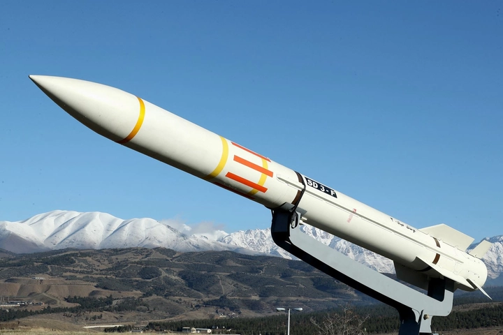
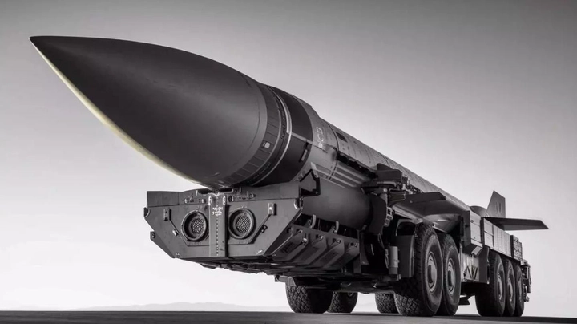
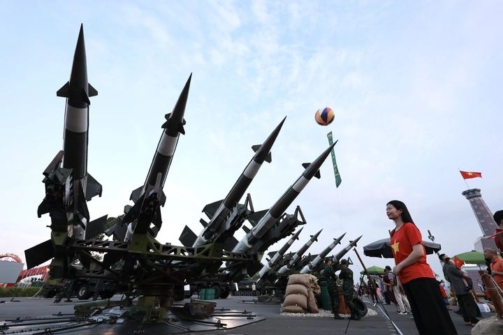
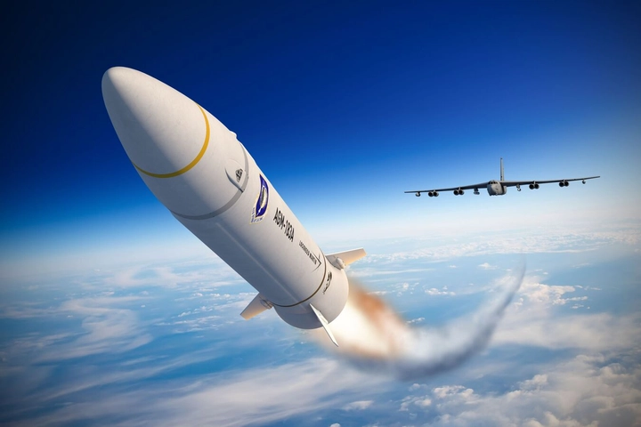

Lịch sử phát triển tên lửa: từ pháo hỏa tiễn cổ đại đến công nghệ hiện đại
Trong bối cảnh an ninh toàn cầu ngày nay, tên lửa chiến lược không chỉ là vũ khí mà còn là biểu tượng sức mạnh, răn đe và đòn bẩy chính trị của các quốc gia. Những căng thẳng khu vực, các hiệp định kiểm soát vũ khí hay các công nghệ quốc phòng mới đều gắn liền với khả năng phát triển tên lửa.
Việc nghiên cứu lịch sử phát minh và tiến hóa của tên lửa giúp chúng ta hiểu rõ sự đổi mới công nghệ, chiến lược quân sự và tác động đối với chính sách quốc tế hiện nay.
Hôm nay hãy cùng TrithucWorld tìm hiểu về lịch sử phát triển của loại vũ khí chiến lược này nhé!
1. Nguồn gốc ý tưởng tên lửa
Ý tưởng về tên lửa có lịch sử hàng nghìn năm, bắt nguồn từ Trung Quốc cổ đại, nơi con người lần đầu tiên chế tạo các pháo hỏa tiễn sơ khai. Những thiết bị này sử dụng khí nổ để phóng vật thể, ban đầu phục vụ mục đích chiến tranh như chống lại kẻ thù hoặc bảo vệ thành lũy, đồng thời còn được dùng trong các lễ hội, nghi lễ tôn giáo và các hoạt động dân gian. Qua nhiều thế kỷ, các kỹ sư và thợ thủ công Trung Quốc dần cải tiến vật liệu cháy, cơ chế đẩy và thiết kế đầu mũi, giúp tên lửa bay xa hơn và ổn định hơn.
Không chỉ riêng Trung Quốc, các nền văn minh khác như Ấn Độ, Trung Đông và châu Âu cũng học hỏi và phát triển các khái niệm về hướng bay, tầm bắn và điều khiển quỹ đạo. Những thử nghiệm sơ khai này, mặc dù còn thô sơ, đã đặt nền móng cho sự hiểu biết về động lực học, khí động học và kỹ thuật điều khiển, là những yếu tố quan trọng cho các thế hệ tên lửa sau này.

Quan trọng hơn, các ý tưởng sơ khai về tên lửa không chỉ gói gọn trong quân sự mà còn thúc đẩy sự phát triển khoa học và công nghệ, mở đường cho sự ra đời của tên lửa hiện đại, đạn đạo và cả các chương trình không gian sau này. Sự tiến hóa này cho thấy một chuỗi dài từ sáng tạo dân gian, thử nghiệm chiến tranh đến nghiên cứu khoa học kỹ thuật cao, phản ánh mối quan hệ mật thiết giữa nhu cầu thực tiễn và phát minh công nghệ.
2. Tên lửa trong Thế chiến thứ hai
Trong bối cảnh Thế chiến thứ hai, Đức đã tiên phong phát triển tên lửa V-2, được coi là tên lửa đạn đạo tiên tiến đầu tiên trên thế giới. Đây là một bước đột phá lớn so với các loại vũ khí truyền thống, nhờ khả năng bay xa và tốc độ vượt trội, tạo nên lợi thế chiến lược đáng kể trên chiến trường. V-2 sử dụng động cơ nhiên liệu lỏng mạnh mẽ, cho phép bay ở tốc độ siêu âm, đồng thời có thể mang đầu đạn với sức hủy diệt lớn, điều mà pháo binh thông thường không thể đạt được.
Tên lửa V-2 không chỉ là vũ khí quân sự, mà còn là minh chứng cho khả năng ứng dụng khoa học và kỹ thuật vào chiến tranh. Sự kết hợp giữa cơ học, động lực học, hóa học nhiên liệu và vật liệu chịu nhiệt đã tạo nên một hệ thống phức tạp, cho phép điều khiển hướng bay, ổn định quỹ đạo và tối ưu hóa tầm bắn. Điều này cho thấy rằng, ngay từ thời kỳ chiến tranh, các kỹ sư đã bắt đầu khai thác triệt để các nguyên lý khoa học để tạo ra lợi thế trên chiến trường.
Sau khi chiến tranh kết thúc, nhiều kỹ sư Đức, trong đó có Wernher von Braun, được Mỹ và Liên Xô mời tham gia các chương trình tên lửa quốc gia. Đây là một bước ngoặt quan trọng trong lịch sử phát triển tên lửa, bởi các kỹ thuật và kinh nghiệm từ V-2 đã thúc đẩy nghiên cứu tên lửa trên quy mô quốc tế, mở đường cho các dự án tên lửa đạn đạo, tên lửa không gian và cả chương trình hạt nhân sau này.
V-2 còn có ảnh hưởng lâu dài về mặt chính trị và quân sự. Sự xuất hiện của tên lửa này đã thay đổi cách nhìn nhận về sức mạnh quân sự, tạo ra một kỷ nguyên mới mà công nghệ và chiến lược răn đe trở thành yếu tố quyết định. Tên lửa không còn chỉ là công cụ chiến thuật mà còn trở thành biểu tượng quyền lực, dẫn đến những nghiên cứu và phát triển sâu rộng trong thời kỳ Chiến tranh Lạnh.
3. Cuộc chạy đua tên lửa thời Chiến tranh Lạnh
Sau khi Thế chiến thứ hai kết thúc, thế giới bước vào thời kỳ Chiến tranh Lạnh, với Mỹ và Liên Xô trở thành hai cường quốc đối đầu về chính trị, quân sự và công nghệ. Trong bối cảnh này, tên lửa trở thành biểu tượng quyền lực và chiến lược răn đe, đồng thời là công cụ quan trọng trong cuộc cạnh tranh giữa hai siêu cường.
Cả hai quốc gia đều tập trung phát triển các ICBM (Intercontinental Ballistic Missile) – tên lửa đạn đạo liên lục địa – có khả năng mang đầu đạn hạt nhân đến bất kỳ mục tiêu nào trên thế giới. Đây là bước tiến vượt bậc so với các loại tên lửa trước đó, nhờ việc áp dụng động cơ tiên tiến, hệ thống dẫn đường chính xác và vật liệu chịu nhiệt hiện đại. Việc sở hữu ICBM không chỉ mang tính chất quân sự mà còn là công cụ ngoại giao và răn đe chiến lược, giúp mỗi bên duy trì thế cân bằng quyền lực.
Cuộc chạy đua tên lửa thời kỳ này đã thúc đẩy đổi mới khoa học và công nghệ trên quy mô toàn cầu. Nghiên cứu về động cơ tên lửa, nhiên liệu lỏng và rắn, hệ thống dẫn đường, cũng như việc phát triển các trạm thử nghiệm đã tạo nền tảng cho cả chương trình không gian dân dụng và quân sự. Ngoài ra, sự căng thẳng này còn dẫn đến việc ra đời các tổ chức giám sát quốc tế và thỏa thuận kiểm soát vũ khí nhằm hạn chế nguy cơ chiến tranh hạt nhân.
Cuộc chạy đua tên lửa không chỉ thay đổi cách các quốc gia nhìn nhận sức mạnh quân sự mà còn định hình lại chiến lược quốc phòng toàn cầu, đồng thời thúc đẩy tiến bộ khoa học, kỹ thuật và nghiên cứu vũ khí công nghệ cao.
4. Tên lửa chiến lược đa tầng
Một bước tiến quan trọng trong lịch sử phát triển tên lửa là công nghệ tên lửa chiến lược đa tầng. Khác với các loại tên lửa truyền thống, tên lửa đa tầng gồm nhiều tầng động cơ, mỗi tầng thực hiện một chức năng riêng biệt để tối ưu hóa tầm bắn, tốc độ và độ chính xác. Tầng đầu tiên chịu trách nhiệm đưa tên lửa ra khỏi bầu khí quyển, tầng thứ hai tăng tốc và điều chỉnh quỹ đạo, trong khi tầng cuối cùng đảm bảo đầu đạn đạt mục tiêu một cách chính xác nhất.
Công nghệ đa tầng giúp tên lửa chiến lược vượt qua các biện pháp phòng thủ và tăng khả năng răn đe hạt nhân, trở thành trụ cột trong chiến lược quân sự của nhiều quốc gia. Việc phát triển loại tên lửa này đòi hỏi nghiên cứu sâu về vật liệu chịu nhiệt, khí động học, hệ thống dẫn đường và điều khiển quỹ đạo, đồng thời kết hợp các phương pháp kiểm soát chính xác trong thời gian thực.
Ngoài giá trị quân sự, công nghệ đa tầng cũng mở ra cơ hội cho ngành vũ trụ dân dụng. Nguyên lý này được ứng dụng trong các tên lửa phóng vệ tinh, tàu con thoi và các chương trình thám hiểm không gian, cho phép đưa vật thể lên quỹ đạo thấp, trung hoặc cao mà vẫn đảm bảo an toàn và hiệu quả. Nhờ vậy, các tên lửa đa tầng không chỉ là vũ khí chiến lược mà còn là bước đệm quan trọng cho sự phát triển khoa học, kỹ thuật và thám hiểm vũ trụ hiện đại.
5. Tên lửa hạt nhân và răn đe chiến lược
Sự ra đời của tên lửa hạt nhân đã làm thay đổi toàn bộ chiến lược quân sự trong thế kỷ 20. Không chỉ là công cụ tấn công, tên lửa hạt nhân còn trở thành công cụ răn đe chiến lược, giúp các quốc gia duy trì sự cân bằng quyền lực và tránh xung đột trực tiếp.
Tên lửa hạt nhân được thiết kế để mang đầu đạn với sức công phá khủng khiếp, có khả năng phá hủy toàn bộ thành phố hoặc khu vực chiến lược. Việc sở hữu loại vũ khí này đã khiến các nước phải tính toán kỹ lưỡng trong việc triển khai quân sự, nhằm ngăn chặn chiến tranh hạt nhân toàn diện. Chiến lược răn đe dựa trên nguyên lý “Mutually Assured Destruction” (MAD), theo đó bất kỳ cuộc tấn công hạt nhân nào cũng sẽ dẫn đến sự hủy diệt lẫn nhau, buộc các cường quốc phải cân nhắc trước khi sử dụng vũ khí này.

Không chỉ ảnh hưởng về mặt quân sự, sự phát triển tên lửa hạt nhân còn thúc đẩy nghiên cứu khoa học và công nghệ liên quan, từ động cơ nhiên liệu tiên tiến, vật liệu chịu nhiệt, đến hệ thống dẫn đường chính xác. Đồng thời, nó tạo ra nhu cầu về ngoại giao quốc tế, kiểm soát vũ khí và các thỏa thuận giảm thiểu rủi ro, như Hiệp ước SALT hay START.
6. Tên lửa vũ trụ và ứng dụng dân dụng
Cùng với sự phát triển của công nghệ quân sự, các nguyên lý tên lửa được áp dụng vào không gian dân dụng. Các tên lửa vũ trụ đầu tiên, dựa trên công nghệ V-2 và ICBM, được sử dụng để phóng vệ tinh, tàu vũ trụ và thăm dò các hành tinh.
Tên lửa vũ trụ đa tầng cho phép đưa vật thể vào quỹ đạo thấp, trung hoặc cao, mở ra kỷ nguyên thám hiểm không gian và liên lạc vệ tinh. Việc nghiên cứu và triển khai các tên lửa này đã thúc đẩy các lĩnh vực khoa học khác như vật lý, vật liệu, điện tử, hệ thống điều khiển và robot tự động.
Ngoài mục đích khám phá, tên lửa vũ trụ còn mang lại lợi ích dân dụng trực tiếp, từ dự báo thời tiết, định vị toàn cầu (GPS) đến liên lạc quốc tế. Điều này cho thấy rằng các công nghệ khởi nguồn từ quân sự, khi được điều chỉnh và phát triển hợp lý, có thể mang lại giá trị lớn cho đời sống con người và phát triển kinh tế xã hội.
7. Tên lửa hiện đại và xu hướng phát triển
Trong thế kỷ 21, tên lửa hiện đại không chỉ phục vụ mục đích quân sự mà còn mang tính chất khoa học, công nghiệp và thương mại. Công nghệ dẫn đường, định vị vệ tinh, động cơ nhiên liệu hiệu suất cao và vật liệu siêu nhẹ giúp tên lửa hiện đại đạt tầm bắn xa, chính xác và hiệu quả hơn bao giờ hết.
Các xu hướng phát triển hiện nay bao gồm: tên lửa tái sử dụng, giảm chi phí phóng; tên lửa siêu thanh với khả năng né tránh phòng thủ; và tên lửa không người lái phục vụ nghiên cứu hoặc vận chuyển hàng hóa. Trong quân sự, tên lửa hiện đại kết hợp với hệ thống phòng thủ mạng và AI để nâng cao khả năng phản ứng nhanh và chính xác.

Bên cạnh đó, các công nghệ này đang mở ra cơ hội thương mại và thám hiểm vũ trụ, giúp con người tiếp cận với không gian dễ dàng hơn, từ việc phóng vệ tinh đến nghiên cứu hành tinh và khai thác tài nguyên ngoài Trái Đất. Tên lửa hiện đại trở thành biểu tượng của sự kết hợp giữa khoa học, kỹ thuật và chiến lược, đồng thời phản ánh xu hướng toàn cầu hóa và hội nhập công nghệ trong thời đại mới.
8. Tên lửa dẫn đường chính xác và tác động chiến lược
Bước tiến quan trọng trong công nghệ tên lửa hiện đại là sự ra đời của tên lửa dẫn đường chính xác (Precision-Guided Missile). Loại tên lửa này sử dụng các hệ thống dẫn đường quán tính, GPS, laser hoặc radar để đảm bảo đầu đạn đến mục tiêu với sai số cực thấp, giảm tối đa thiệt hại ngoài ý muốn và nâng cao hiệu quả chiến đấu.
Tên lửa dẫn đường chính xác đã thay đổi chiến lược quân sự: các quốc gia có thể triệt tiêu mục tiêu quan trọng mà không cần triển khai lực lượng mặt đất lớn, giảm rủi ro cho binh sĩ và hạn chế tổn thất dân sự. Việc phát triển loại vũ khí này đòi hỏi nghiên cứu sâu về hệ thống điều khiển, cảm biến, trí tuệ nhân tạo và vật liệu siêu bền, đồng thời thúc đẩy hợp tác giữa khoa học quân sự và dân sự.
Ứng dụng công nghệ dẫn đường chính xác không chỉ dừng lại ở quân sự mà còn mở ra khả năng thương mại và không gian dân dụng, ví dụ như trong phóng vệ tinh, thăm dò hành tinh và vận chuyển hàng hóa tự động. Đây là minh chứng cho sự liên kết giữa nghiên cứu vũ khí và các công nghệ tiên tiến có lợi cho xã hội.
9. Tên lửa tái sử dụng và xu hướng công nghệ mới
Một trong những xu hướng quan trọng của thế kỷ 21 là tên lửa tái sử dụng, do SpaceX và các công ty vũ trụ khác tiên phong phát triển. Thay vì sử dụng tên lửa một lần và bỏ đi, công nghệ tái sử dụng cho phép hạ cánh an toàn, sửa chữa và phóng lại, làm giảm chi phí phóng và tăng hiệu quả khai thác tài nguyên không gian.
Tên lửa tái sử dụng cũng đánh dấu bước ngoặt trong thương mại vũ trụ, khi nhiều quốc gia và doanh nghiệp có thể tiếp cận không gian với chi phí hợp lý hơn. Công nghệ này đồng thời thúc đẩy nghiên cứu về vật liệu chịu nhiệt, hệ thống động cơ tiên tiến và điều khiển bay tự động, góp phần mở rộng khả năng thám hiểm và khai thác không gian trong tương lai.

Xu hướng hiện nay còn bao gồm tên lửa siêu thanh và tên lửa hạ tầng thông minh, kết hợp AI và hệ thống phòng thủ mạng để nâng cao tốc độ, khả năng né tránh và độ chính xác. Những tiến bộ này hứa hẹn thay đổi cục diện chiến lược toàn cầu, đồng thời mở rộng các ứng dụng dân sự, từ vệ tinh, du lịch không gian đến logistics ngoài Trái Đất.
10. Tương lai của tên lửa: hướng tới bền vững và đa năng
Tương lai của tên lửa không chỉ gói gọn trong quân sự mà còn hướng tới bền vững, đa năng và phục vụ cộng đồng. Công nghệ nhiên liệu xanh, vật liệu nhẹ và động cơ hiệu suất cao đang được nghiên cứu để giảm tác động môi trường và chi phí vận hành.
Các loại tên lửa trong tương lai có thể vừa phục vụ mục đích quân sự, nghiên cứu khoa học, thương mại lẫn thám hiểm không gian. Chúng có khả năng phóng nhiều loại payload khác nhau, từ vệ tinh viễn thông, trạm nghiên cứu, tàu thăm dò đến các dự án khai thác tài nguyên ngoài Trái Đất.
Ngoài ra, sự kết hợp giữa AI, robot, dữ liệu lớn và hệ thống dẫn đường tiên tiến sẽ giúp tên lửa tự điều chỉnh quỹ đạo, tối ưu hóa tầm bắn và giảm thiểu rủi ro. Điều này mở ra một kỷ nguyên mới, nơi tên lửa không chỉ là vũ khí chiến lược mà còn là công cụ khoa học, công nghệ và phát triển bền vững, góp phần định hình thế giới trong những thập kỷ tới.